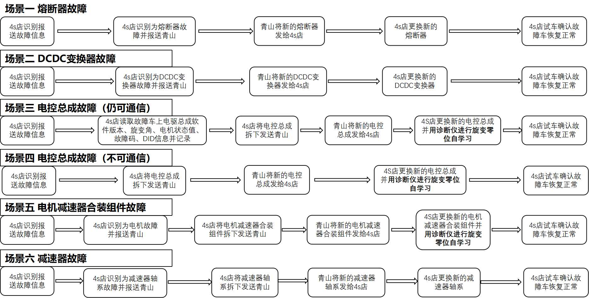

Типичные сценарии ремонта

Метод и Меры предосторожности при самообучении нулевому положению резольвера:
Внимание: в течение всего процесса самообучения резольвера в зоне вокруг ведущих колес, соединенных с электроприводом в сборе, проходящим самообучение, а также спереди и сзади автомобиля не должно быть никаких посторонних предметов и людей!
1. Выполнить Подъем всего автомобиля так, чтобы колеса полностью оторвались от земли;
2. В течение всего процесса самообучения резольвера: оба колеса, соединенные с электроприводом в сборе, проходящим самообучение, должны находиться в состоянии свободного вращения; в это время нельзя нажимать на педаль тормоза; если самообучение проходит задний привод, необходимо отпустить электрический стояночный тормоз (EPB); если самообучение проходит передний привод, рулевое колесо должно находиться в центральном положении;
3. В течение всего процесса самообучения резольвера: автомобиль должен постоянно находиться в режиме P;
4. Включить высокое напряжение автомобиля, после подтверждения правильности всех вышеперечисленных условий подключить Диагностический прибор к автомобилю и войти в модуль контроллера электродвигателя, войти в Функция самообучения без нагрузки и включить ее, подождать около 45 s и Подтвердить, что Диагностический прибор сообщает об успешном завершении самообучения; если сообщается о сбое самообучения, повторно проверить выполнение вышеуказанных условий и попробовать еще раз.